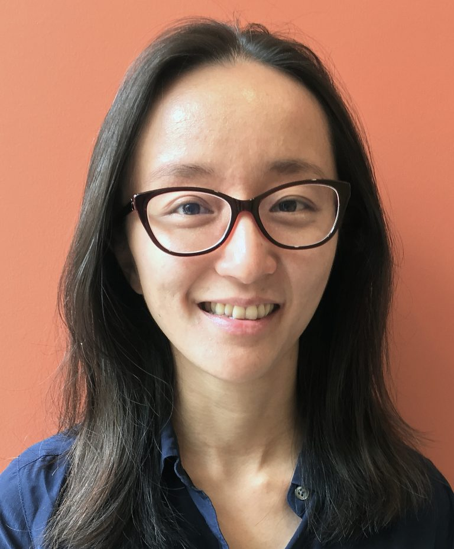

About

Welcome! I am an Associate Professor in the Department of Physics at UC San Diego. I work on theoretical particle physics, particle astrophysics, and cosmology, and I am part of the High Energy Theory group at UC San Diego.
Prior to joining UC San Diego, I was a postdoctoral fellow at Lawrence Berkeley National Lab and UC Berkeley, and a KICP fellow at the University of Chicago. I received my PhD in Physics from Harvard University and my undergraduate degree from MIT.
Contact
Mayer Hall 5210UC San Diego
9500 Gilman Dr.
La Jolla, CA 92093
Research
My research is at the interface of theoretical particle physics, cosmology, and particle astrophysics. A central theme of my work is understanding the particle physics of dark matter. The existence of dark matter is striking evidence of physics beyond the Standard Model, but little is known about its basic particle properties, such as mass and spin.
Dark matter could even be part of a rich dark sector, by analogy with the intricate structure and consequent phenomena of the Standard Model of particle physics. I am interested in identifying new experimental and observational probes that can test the underlying theory of dark matter.
Selected lecture notes and reviews
- TASI lectures on dark matter models and direct detection
Lectures presented at TASI 2018; notes published in 2019. An introduction for graduate students starting research in dark matter. - Searches for light dark matter using condensed matter systems
Review with Yonatan Kahn, first posted in 2021 and published in 2022.
Research publications
For my publication list, see my INSPIRE profile or my papers on arXiv.
People
Current research group at UC San Diego
- Elias Bernreuther (postdoc)
- Junyang Lu (graduate student)
- Benji Savala (undergraduate)
- Whitney Brown (undergraduate)
Past group members at UC San Diego
Jonathan Kozaczuk (postdoc) Mukul Sholapurkar (postdoc) Vincent Lee (N3AS postdoc) Lynn Lin (graduate student) Jung-Tsung Li (graduate student) Brian Campbell-Deem (graduate student) Ethan Villarama (graduate student)
Undergraduates
Nicholas Cassar Natalia Henriquez Sinan Oral Zhihan Wu Natalie Lam Matthew Haines Bhavya Gupta Tiffany Liou Nicole Liu Brigette Vazquez-Segovia Momei Fang Connor Stratman